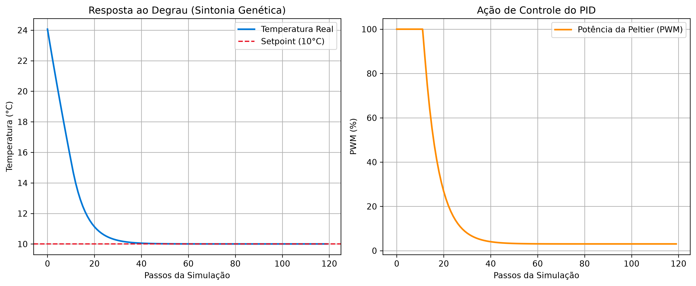

Controle · IoT · IA
Thermal Freezer IoT → Genetic PID Tuning
Dois projetos que formam um ciclo completo. Um ESP32 controla uma pastilha Peltier por PID e publica telemetria via MQTT para um supervisório Node-RED, chegando a −19 °C. Com essa telemetria real, treinei um gêmeo digital e deixei um algoritmo genético sintonizar o controlador em 100 gerações, minimizando o ITAE.
- Gêmeo digital com R² 99,7% e erro médio de 0,38 °C
- Ganhos encontrados: Kp 22,26 · Ki 0,02 · Kd 3,55
- Na Planta Multiprocesso SENAI (OPC UA / Elipse E3): ITAE −93,4%, 0% de sobressinal e acomodação 4× mais rápida que IMC (143,5 s vs 561,5 s)
C++ESP32MQTTNode-REDPythonscikit-learnAltair Compose
